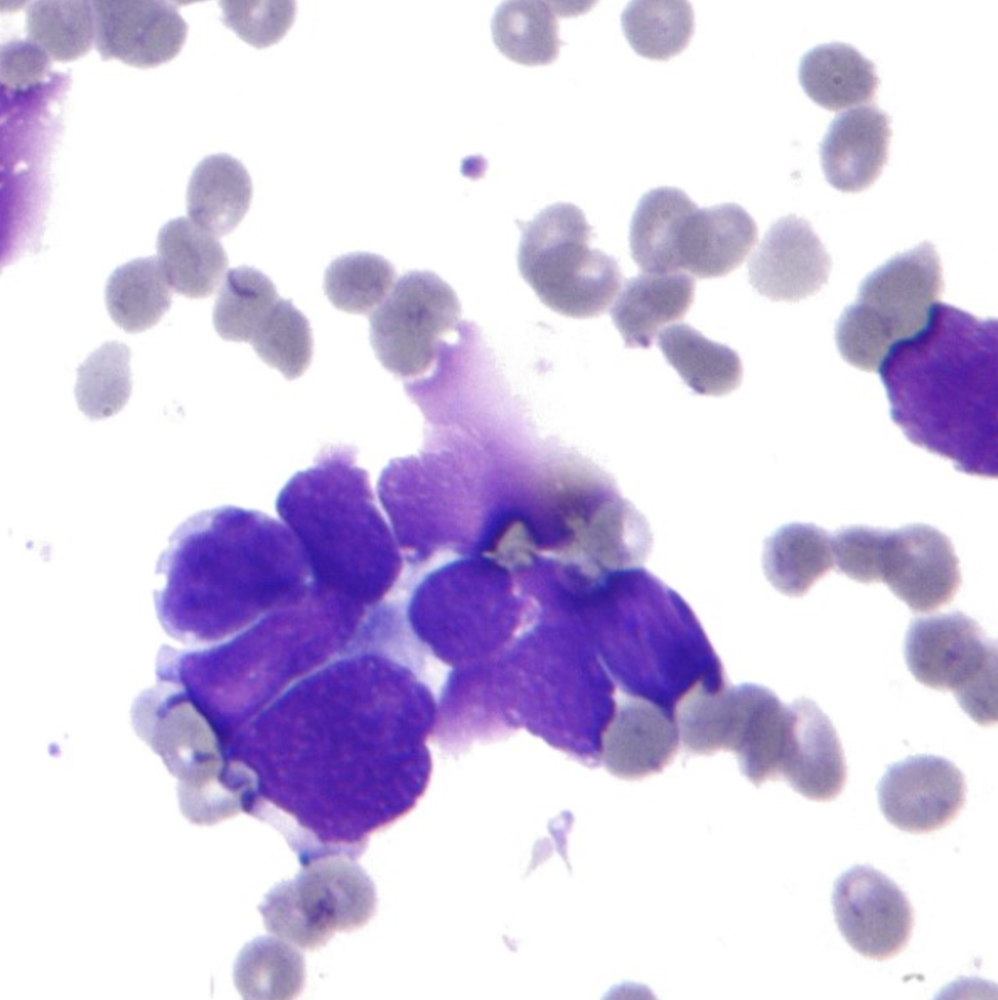

Breast Canser
2023-05-01
Chapter 1 Proposal

1.1 Breast Cancer Data
1.1.1 Describtion
This is one of three domains provided by the Oncology Institute that has repeatedly appeared in the machine learning literature. (See also lymphography and primary-tumor.)
This data set includes 201 instances of one class and 85 instances of another class. The instances are described by 9 attributes, some of which are linear and some are nominal.
1.1.2 Attribute Information
class:no-recurrence-events, recurrence-eventsage:10-19, 20-29, 30-39, 40-49, 50-59, 60-69, 70-79, 80-89, 90-99.menopose:lt40, ge40, premeno.tumor-size:0-4, 5-9, 10-14, 15-19, 20-24, 25-29, 30-34, 35-39, 40-44, 45-49, 50-54, 55-59.inv-nodes:0-2, 3-5, 6-8, 9-11, 12-14, 15-17, 18-20, 21-23, 24-26, 27-29, 30-32, 33-35, 36-39.node-caps:yes, no.deg-malig:1, 2, 3.breast:left, right.breast-quad:left-up, left-low, right-up, right-low, central.irradiat:yes, no.